Fretbelly
A small creature that eats your worries, and shows you how few of them ever come true.
- Role
- Research, design and build
- Platform
- iOS, React Native and Expo
- Status
- On iPhone, App Store soon
- Privacy
- No account, no tracking


Research
Worrydolls
Cute dolls hold your worries, but there is no reality check and no proof.
Worry Watch, WorryTree
Plain journals with outcome charts: clinical, paywalled and without a character.
Worry Eater
A monster eats a typed worry. A kids brand, with no verdicts or insights.
How it works
Put it down
Write a worry, by typing or by hand, crumple it and toss it to the creature. It holds the worry for you.
Worry later
Once a day, at your own worry time, you look at what it holds. Outside that time the jar stays sealed.
Check reality
When a worry's day passes, it asks: did it happen? Each one that did not becomes a lantern in your sky.
See the truth
Your own number builds up, like 17 worries eaten and 2 came true. The creature grows from checking, never from streaks.
Screens
Meeting the creature
- Press and hold to wake it, learn the idea in three steps, then name it and pick its glow.

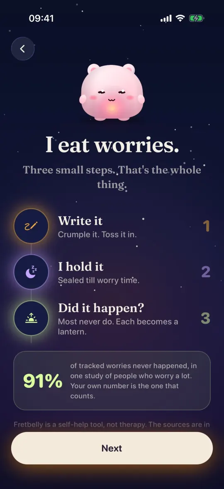
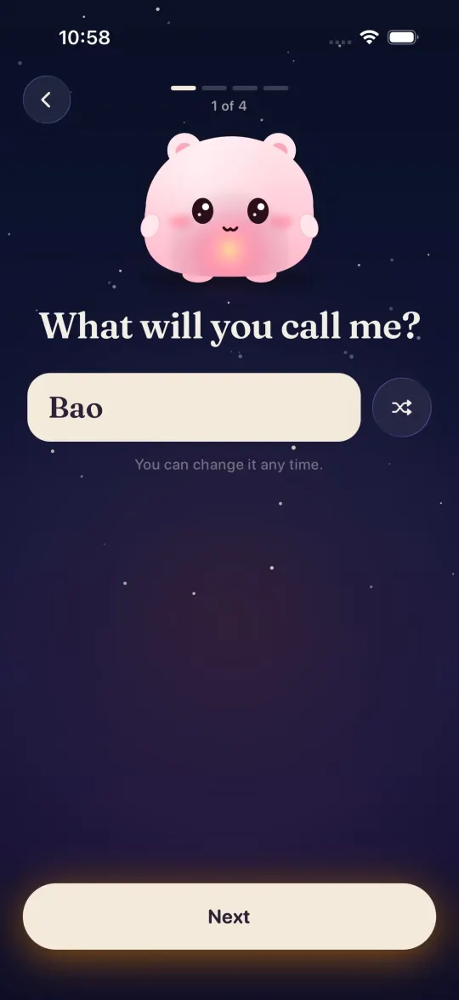
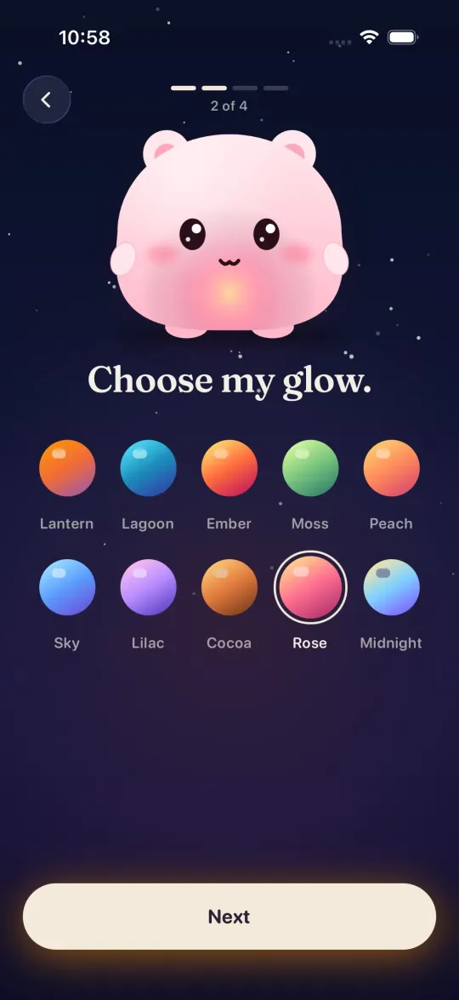
Feeding a worry
- Type or write by hand, rate how likely it feels, then crumple and toss.
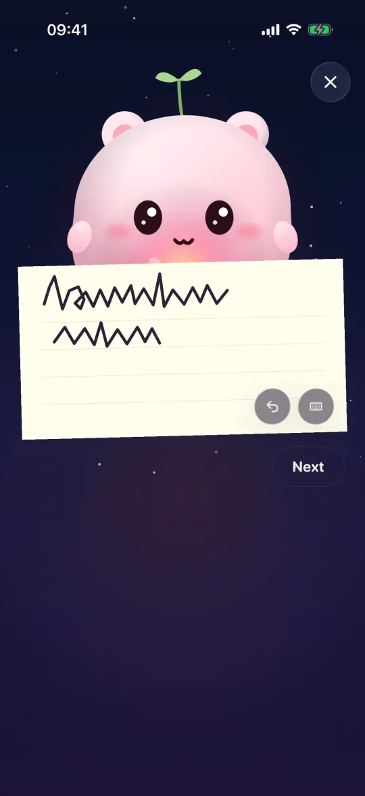
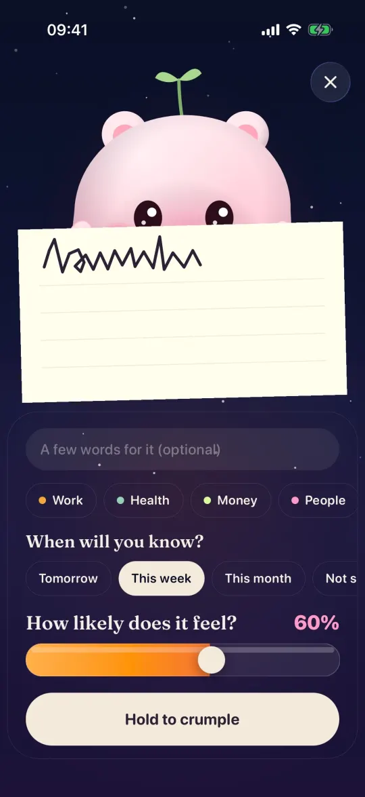
Worry time
- Once a day the jar opens; the rest of the day it stays sealed.
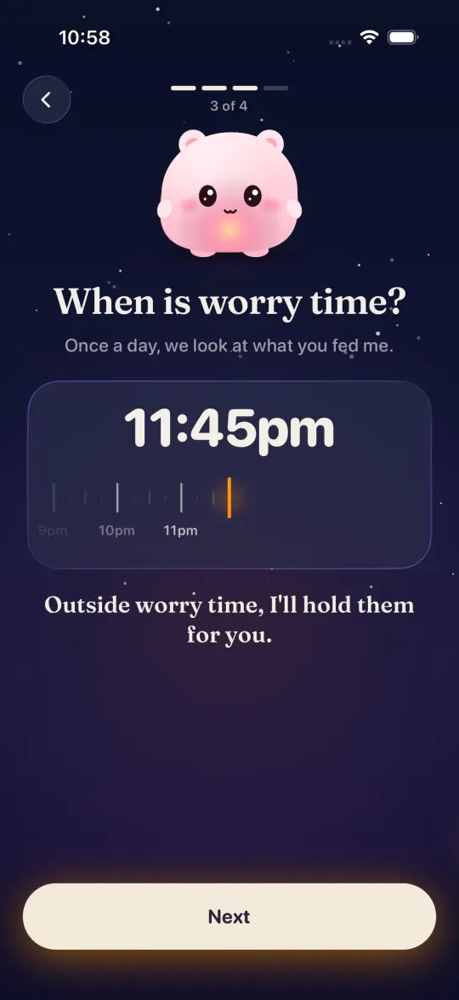
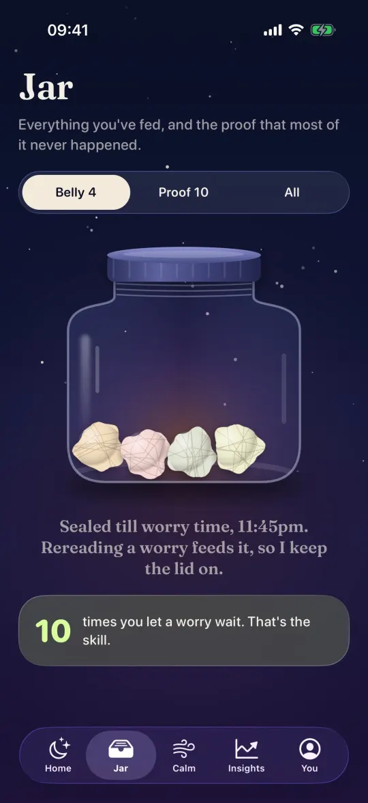
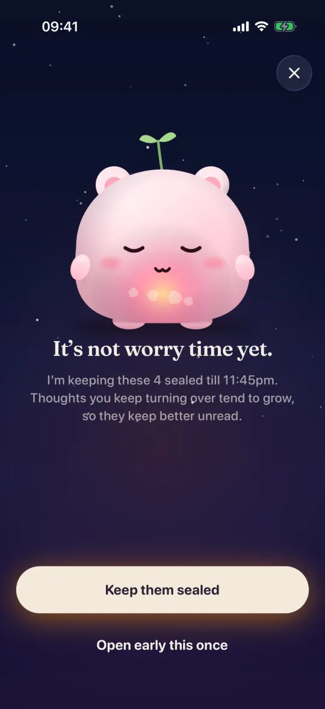
Did it happen?
- Every worry that did not happen becomes a glowing lantern.
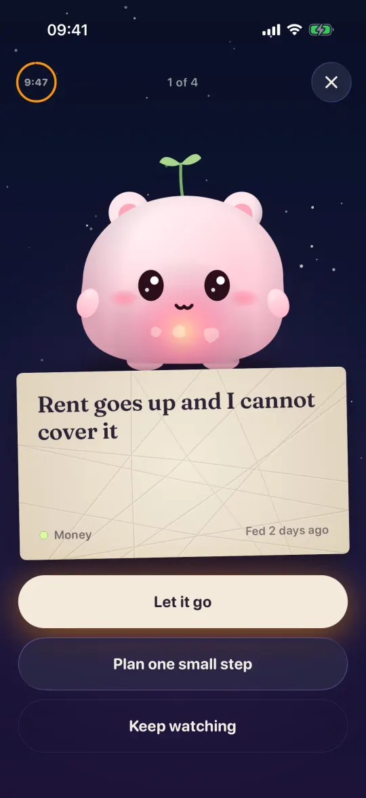

Hard days and insights
- Proof the evening before a hard day, a calm breathing moment, and a sky album for every month.
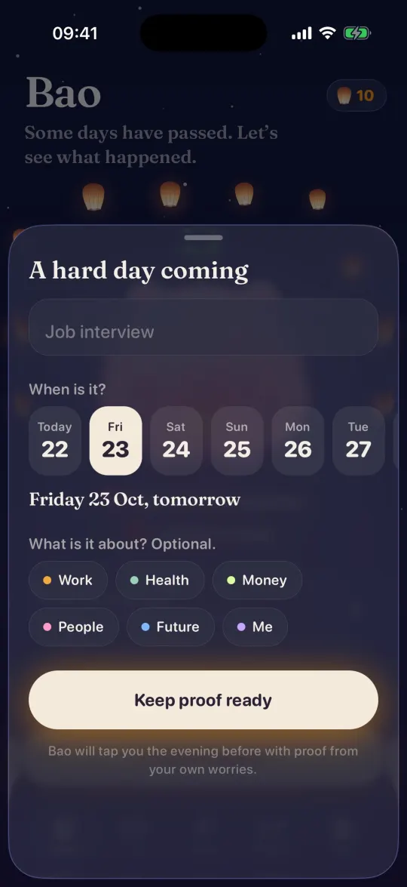
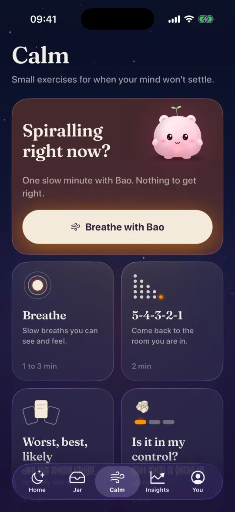
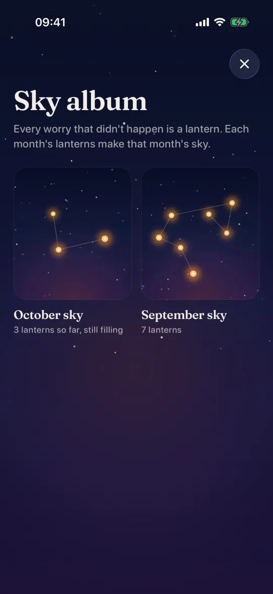